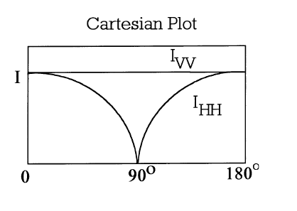

The Tyndall effect, also known as Tyndall scattering, is light scattering phenomena by particles in a colloid or particles in a fine suspension. It is named after the 19th century physicist John Tyndall. When a beam of light is directed at a colloidal solution or dispersion, some of the light is absorbed (colour is produced when light of certain wavelengths is selectively absorbed), some is scattered and the remainder is transmitted undisturbed through the sample. Light scattering results from the electric field associated with the incident light including periodic oscillations of the electron clouds of the atoms of the material in question which then act as secondary sources and radiate scattered light. But only in case of purely homogeneous substances light passes undisturbed and unscattered.

Tyndall effect is seen here using a laser pointer. The glass on the left contains 5 ppm of HVAC colloidal silver and the one on the right is from the tap after the bubbles have settled out.

To observe the light scattering phenomenon- Tyndall effect in Colloidal Systems.

All colloidal solutions are capable of scattering light (Tyndall effect) to some extent. The noticeable turbidity associated with many colloidal dispersions is a consequence of intesne light scattering. A beam of sunlight is often visible from the side because of light scattered by dust particles. Solutions of certain macromolecular materials may appear to be clear but in fact they are slightly turbid because of weak light scattering. Only a perfectly homogeneous system would not scatter light; therefore, even pure liquids and dust-free gases are very slightly turbid. The turbidity of a material is defined by the expression
It/I0=exp [τI]
where I0 is the intensity of the incident light beam, It is the intensity of the transmitted light beam,
l is the length of the sample and τ is the turbidity.
Rayleigh first presented a description of light scattering and adsorption from small particles.
-
The scattering is independent of θ , i.e., it is isotropic in the scattering plane. IVH = IHV = 0, and IHH = IVV cos2 θ, as drawn in Figure below.
 The λ –4 dependence: Blue light scatters more than red. (This is often associated with the blue of the sky and the red of the sunset, but other factors are involved here including the fact that in perfectly clean air (no particles) scattering occurs from small, thermodynamic fluctuations in the air density.)
-
The strong size dependence of a6 is proportional to the particle volume squared, V2part. Feature 3 leads to the Tyndall effect, which describes the increased scattering from an aggregating colloid or aerosol of constant mass. Consider that the total scattering from a particulate system of Rayleigh scatterers of n particles per unit volume has the proportionality
Iscat ∝ nV2part .... (1)If the only growth process in the system is aggregation, the mass is neither created nor destroyed. Thus, the mass density is constant; hence, nVpart is constant. On the other hand Vpart increases during aggregation. Rewritting Equation 1 as
Iscat ∝ nVpart . Vpart
shows that the scattered intensity increases proportional to Vpart as the system aggregates. This is the Tyndall effect.
It is similar to Rayleigh scattering, in that the intensity of the scattered light depends on the fourth power of the frequency, so blue light is scattered much more strongly than red light.
The Tyndall effect is seen when light-scattering particulate-matter is dispersed in an otherwise light-transmitting medium, when the cross-section of an individual particulate is the range of roughly between 40 and 900 nanometers; i.e., somewhat below or near the wavelength of visible light (400 —750 nanometers).
Rayleigh scattering is defined by a mathematical formula that requires the light-scattering particles to be far smaller than the wavelength of the light. For a dispersion of particles to qualify for the Rayleigh formula, the particle sizes need to be below roughly 40 nanometers; and the particles may be individual molecules. Colloidal particles are bigger, and are in the rough vicinity of the size of a wavelength of light. It follows from scattering theory that Tyndall scattering (by colloidal particles) is much more intense than Rayleigh scattering. The importance of the size factor for intensity can be seen in the large exponent it has in the mathematical statement of the intensity of Rayleigh scattering. There is no equivalent mathematical statement for Tyndall scattering. But if the colloid particles are spheroid, Tyndall scattering is mathematically analysable in terms of Mie theory, which admits particle sizes in the rough vicinity of the wavelength of light.
The Tyndall effect is commercially exploited to determine the size and density of particles in aerosols and other colloidal matter.

To start the experiment do the following:
- To prepare any of the six solution, select any of them by clicking on it, placed on the left shelf.[For preparation procedure refer to the experment methodolgy on colloids preparation].
- Prepare six different solutions by choosing each of them. In case of salt, sugar and detergent stir the mixture well and specially in slow manner in case of soap solution(detergent).
- Pass light through each of the prepared colloid and sample solutions from a torch sharply. [For this operation click on the sample prepared on the table to pass light through and then observe]
- Observe the change and then conclude the result of your observation that whether it shows Tyndall effect or not and hence also propose that whether its a colloidal solution or not.
- Observe the correctness of your conclusion to the results.
- Click on the link that appears below to get a microscopic analysis of the process which you observed before.[click on “view” tab].
- Repeat the same for all the other samples prepared earlier.


Pre-Experiment
- What are the three phenomena that happens when light is passed through a colloidal solution?
- In which case does the light pass undisturbed and unscattered ?
- Give 1 point to show why is it similar to Rayleigh's scattering and 1 point for how is it different.
- In which point does Rayleigh's theory of scattering differ from Mie's theory of scattering?
Post-Experiment
- In which of the demonstrated samples do you see Tyndall effect?
- What happens to the soap solution if you stir hard?
- List which are the true solutions and why.
- Arrange the particle size of the following three solutions in increasing order: salt, detergent & Fe(OH)3 colloid.

 Experiments
Experiments Feedback
Feedback{kind=link}